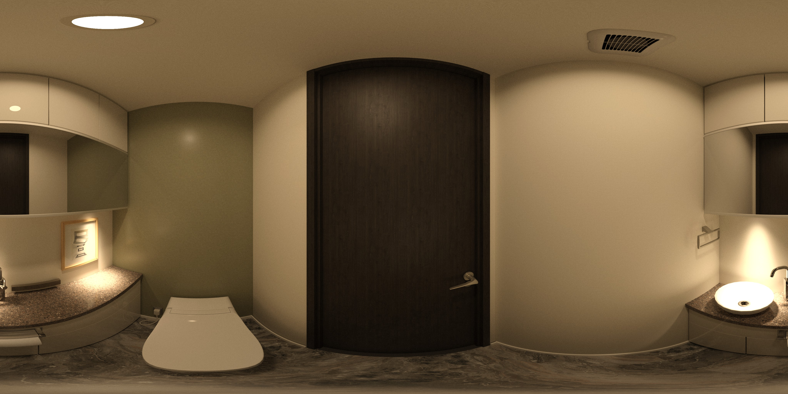
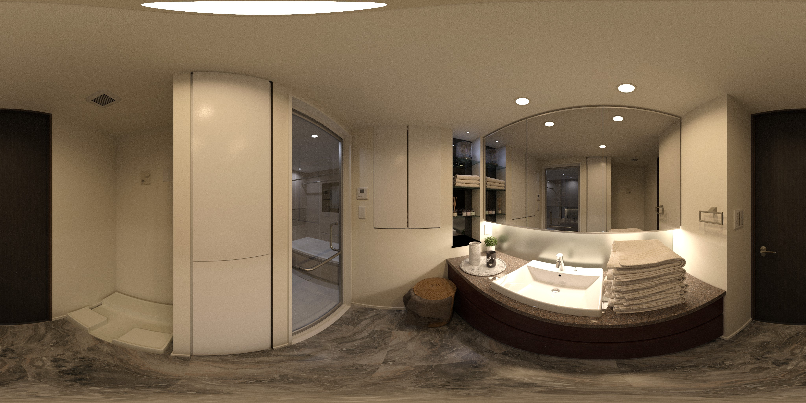
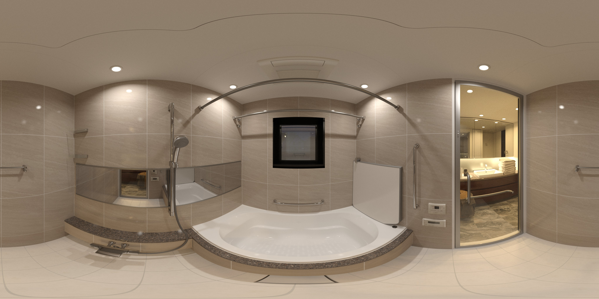

<!DOCTYPE html>
<html>
  <head>
    <meta charset="utf-8">
    <title>test</title>
    <script src="https://aframe.io/releases/1.0.4/aframe.min.js"></script>
    <script src="js/aframe-html-shader.min.js"></script>
    <script src="js/html2canvas.min.js"></script>
    <script src="js/app.js"></script>
    <a-asset>
      
      
      
    </a-asset>

  </head>
  <body>

    <a-scene loading-screen="dotsColor: red; backgroundColor: black">
      <!-- 360-degree image. -->
      <a-entity camera="" position="" wasd-controls="adEnabled: false; enabled: false; wsEnabled: false" look-controls="" aframe-injected="" data-aframe-inspector-original-camera="" rotation=""></a-entity>
      <a-entity camera look-controls>
        <a-entity cursor="fuse: true; fuseTimeout: 500"
                  position="0 0 -1"
                  geometry="primitive: ring; radiusInner: 0.01; radiusOuter: 0.02"
                  material="color: gray; shader: flat">
        </a-entity>
      </a-entity>
      <a-sky id="image-360" radius="100" cursor-listener src="#images_01"
             animation__fade="property: components.material.material.color; type: color; from: #FFF; to: #000; dur: 300; startEvents: fade"
             animation__fadeback="property: components.material.material.color; type: color; from: #000; to: #FFF; dur: 300; startEvents: animationcomplete__fade"></a-sky>
      <a-entity rotation="0 180 0">
          <a-circle id="#link01" position="0 0 5" material="src: images/VR_13_5222_1500mm.jpg" geometry="primitive: sphere; radius: 0.2" pivot="0 0 0"></a-circle>
      </a-entity>
      <a-entity rotation="0 90 0">
        <a-entity
          geometry="primitive:  circle;  segments:  64; radius:  10"
          link="href:  aframe-test_all_fix.html;  title:  test;  image:  #test;  highlighted:  true;  visualAspectEnabled:  true"
          material="shader:  portal;  pano:  #test;  side:  double;  backgroundColor:  #24CAFF;  strokeColor:  #24CAFF"
          position="0 0 5"
          scale="0.1 0.1 0.01"
        ></a-entity>
      </a-entity>
    </a-scene>
  </body>
</html>


